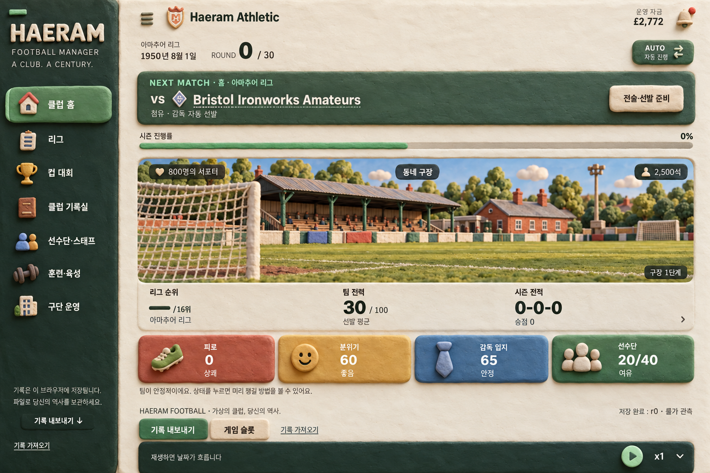

HAERAM FOOTBALL · HOME THEME STUDIES
그림의 언어가 바뀌는, 다섯 가지 테마.
현재 홈을 기준으로 구장 삽화 · 아이콘 · 버튼 · 표면 질감을 함께 바꾼 아트 방향 시안입니다.
00 현재 테마 + 01–05 새 콘셉트
1950 · Haeram Athletic
추천 01 클레이 디오라마 — 작은 구단을 직접 키우는 감각을 모형 구장과 입체 아이콘으로 표현합니다. 본문은 기본 산세리프를 기준으로 합니다.
EXPLORE THE HOME
클레이 디오라마

현재 홈 캡처를 참고해 생성한 콘셉트 이미지입니다. 본문 서체는 Pretendard 계열을 기준으로 하며, 실제 구현 전 삽화·아이콘·UI 재질의 방향을 비교합니다.